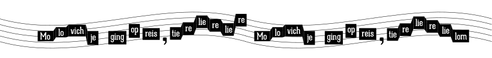
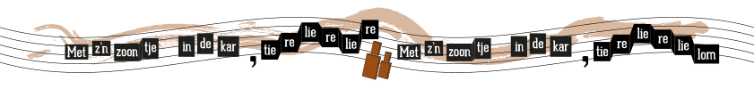
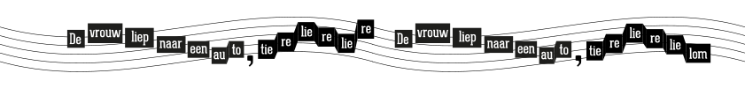
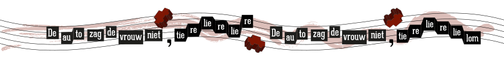
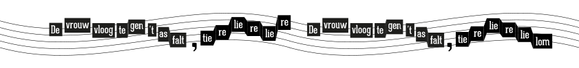
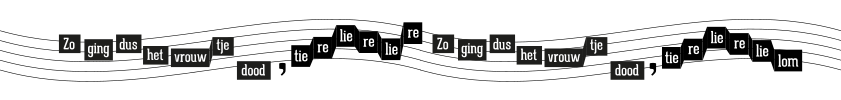
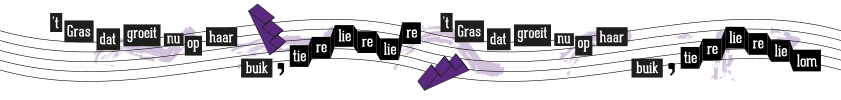

14 minuten








Lees ook
18 minuten
Toneel
Scene 1: Op het toneel staat een paal met bovenop een rond bord waarop we BUSSTOP lezen...
Gepupliceerd op 14 april 2011
22 minuten
Ongeboren
Jij bevindt je een paar kilometer verderop in de buik van je moeder. Ik heb je gisteren gezien. Ik zag je armpjes, je beentjes, je naar...
Gepupliceerd op 29 maart
12 minuten